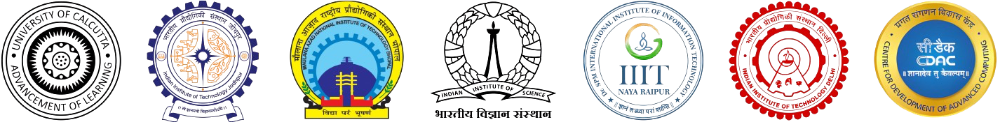

|
I completed my B.Tech in Electronics and Communication Engineering in 2025, from Institute of Radio Physics and Electronics (IRPE), University of Calcutta, India. I also completed my Minors in Business Administration from Indian Institute of Technology (IIT), Patna. I was a Winter Research Intern at IIT Delhi with Prof. Tapan Kumar Gandhi , focusing on graph based deep learning framework for anxiety state detection from neural signals. Further, I analyzed intercranial EEG (iEEG) data for real-time epileptic seizure prediction in humans. I also served as a Research Intern at MANIT Bhopal under Dr. Varun Bajaj , contributing to EEG-based identification of dementia subtypes, and at IIIT Naya Raipur under Dr. Anurag Singh , where I developed multimodal deep learning methods for Major Depressive Disorder diagnosis. Earlier, I worked at CDAC Pune with Dr. Anil Kumar Gupta on EEG-based early detection of Parkinson’s Disease and pathological brain state classification. Further, at University of Calcutta, under Dr. Anisha Halder Roy , I worked on multimodal EEG–sEMG fusion for chronic Lower Back pain assessment, performed dedicated neuropathic pain analysis using EEG signals, and investigated brain activity patterns during olfactory and gustatory perception. Email / CV / Google Scholar / LinkedIn / Github |

|
|
 |
|
My primary research interests span
Artificial Intelligence & IoT in Healthcare,
Biomedical Signal Processing,
Brain-Computer Interface (BCI),
Neural Engineering,
Computational Neuroscience
and
Medical Image Analysis.
I am deeply fascinated by the potential of these fields to shape the future
of technology and transform the way we interact with machines and information.
|

|
|
Awards & Achievements
Recipient of
IASc-INSA-NASI Summer Research Fellowship
Program 2024
|
||||||
Reviewer
|
||||||
Positions of Responsibility
|
|
© Sagnik De (2025) | A person who never made a mistake never tried anything new |